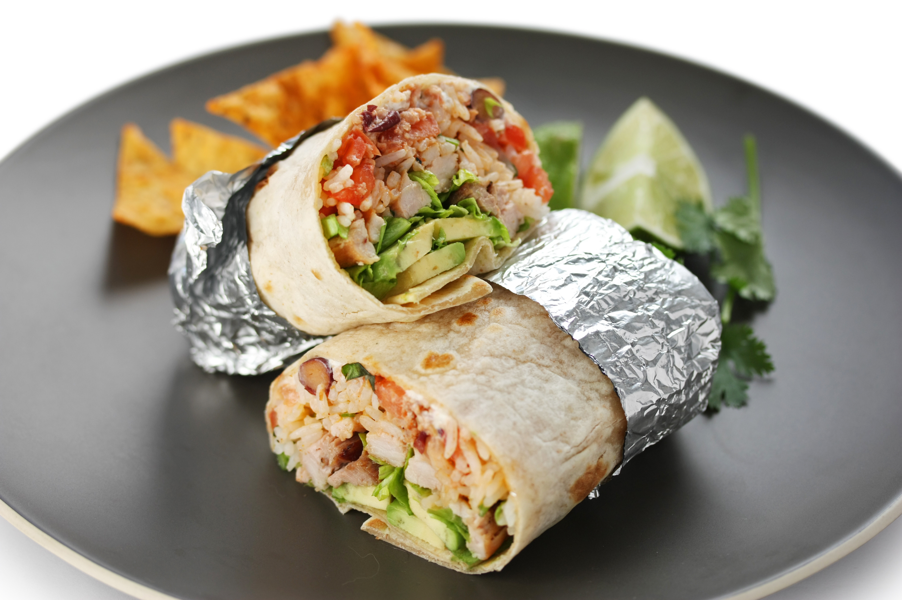

⮜ Voltar
Burrito com pão folha

Ingredientes
- 1 pacote de tortilla pão folha
- Alface picadinha bem fininha
- Queijo ralado
- Guacamole
- Tomates mais firmes picados em cubinhos e sem semente
- Frango desfiado já temperado ou carne moída também temperadinha
Modo de preparo
A montagem é simples e também igual ao taco. Pegue o pão folha e espalhe
um pouco de guacamole, depois a carne, o tomate, o queijo e alface. Se
quiser mais picante, você pode colocar um molhinho de pimenta em cima da
carne.